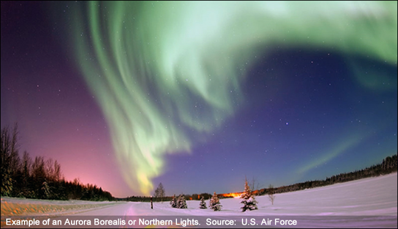
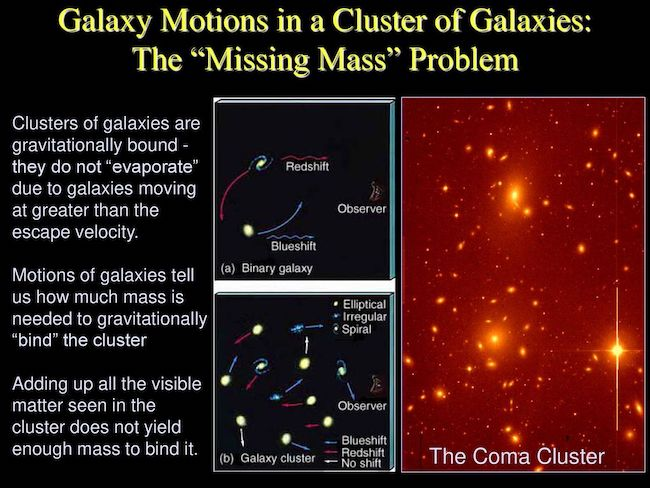
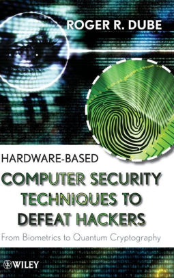

Attracting Native students to the STEM disciplines has been a hard problem. There are many forces at work that complicate this, including a non-science self-image imposed by historical misconceptions by the mainstream culture, fears of brain drain by the communities, and a long term need to help improve conditions and opportunities for the home communities. Through careful integration of an NSF grant for engaging undergraduate students in research, RIT has been successful in establishing a foundational path for Native Students with the background and motivation to succeed in STEM careers. One casualty of the historic clash between European and Native American cultures in the past was the vast amount of Native American science that had been developed in the western hemisphere, often hundreds to thousands of years before the same advances were developed to the East. One of many such losses was the near elimination of Iroquois White Corn, a low glycemic index food that helps prevent diabetes. As the French sent their troops in to New York State to remove or eliminate the Seneca, they burned crop fields and large stores of white corn that were the winter food supply of the Iroquois towns. After these attacks, the Seneca gradually reduced their dependency on their historic food, and the number of acres dedicated to its growth dwindled to 75 acres worldwide. Working with the University of Manitoba in Winnipeg, Canada, we have been developing a program (named “Wawatay” for Northern lights) to assist Indigenous students as they enter a STEM career. The program provides customized help to bring the student skill levels up to the necessary levels for success, and creates an atmosphere of support and camaraderie throughout their 4 years on campus. The program employs an early engagement in research activities that are specifically tied to their home communities. Click here for more information. read more
Native Americans in STEM
Space Weather
Severe space weather storms can disrupt the power grid, knock out radio and satellite communications, and threaten spacecraft. A recent study by the National Academy of Sciences conculded that a Carrington-type event (a powerful space weather storm experienced in 1859) would cripple technology societies worldwide for up to 10 years. Unfortunately, today's technologies provide only about 30 minutes of advanced warning before such a storm arrives at Earth from the sun. This NASA-supported research focuses on developing new advanced artificial intelligence algorithms that will provide much earlier warnings. Armed with this tool, colonies on the moon and Mars will be better able to protect themselves from harmful radiation showers. Student researchers have developed a variety of critical new tools for the scientific community, included automated feature recognition and measurement software, and have applied advanced learning algorithms to identify and share previously unknown solar parameter correlations to help develop more complete solar models.
My research here is focused on applying AI to the big data issues of identifying and extracting functional relationships between various space weather observables, with a goal towards creating a reliable advanced warning system for these dangerous storms.
The Missing Mass Problem
The “missing mass problem” was derived from Olber’s paradox. Olber explained that if the universe were infinite, then at any point on the night sky, we would be looking at the surface of a star. There would be no “night”. He conjectured that therefore the universe is finite, and that the total light coming from “between” stars, called the Extragalactic Background Light, or EBL, would be the integral of light from all luminous matter radiated throughout history. Using the mass to light ratio that is observed in galaxies, one should be able to use the measurement of the EBL to infer the total mass represented by the EBL. Adding this to the total mass of all observed galaxies, one can estimated the “mass of the universe.” Unfortunately, this turns out to be only about 10% of the mass needed to gravitationally bind the universe. Since theorists prefer time-symmetric solutions, such as an oscillating universe, the absence of 90% of the mass needed to bind it was called the “Missing Mass” problem.
My work, beginning with my PhD thesis, has been to set a progressively better upper limit to the EBL.
Physics Based Computer Security
Computer security can be dramatically enhanced through the use of hardware devices that employ physical processes to obtain truly random numbers that act as keys for advanced cryptography. This research, in conjunction with Digital Authentication Technologies, Inc., applies location-aware physics-based devices to the task of authenticating physical locations without the use of geolocation (triangulation using GPS) information. The location-aware aspect of this technology is being applied to the protection of critical servers so that access to information can only occur if the server is continually in a previously characterized location. Movement of the server, or any attempt to spoof the system, closes the encrypted VPN channel, thereby protecting critical files.
We continue working with various government agencies to apply this important technology to harden the protection of critical information resources.